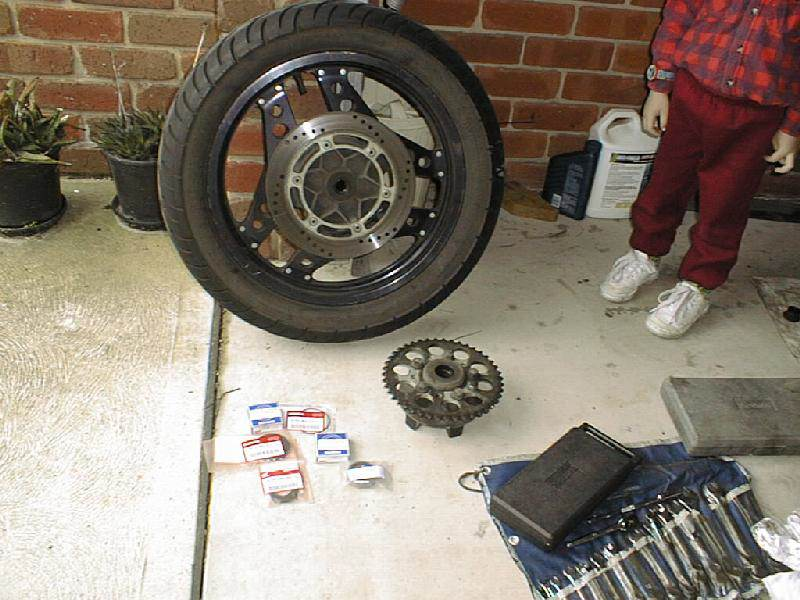
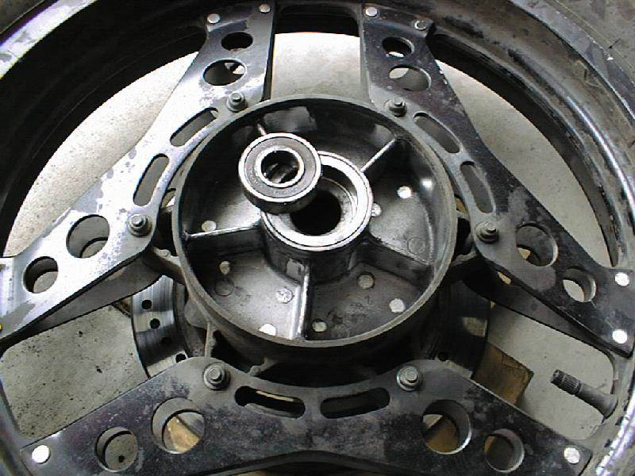
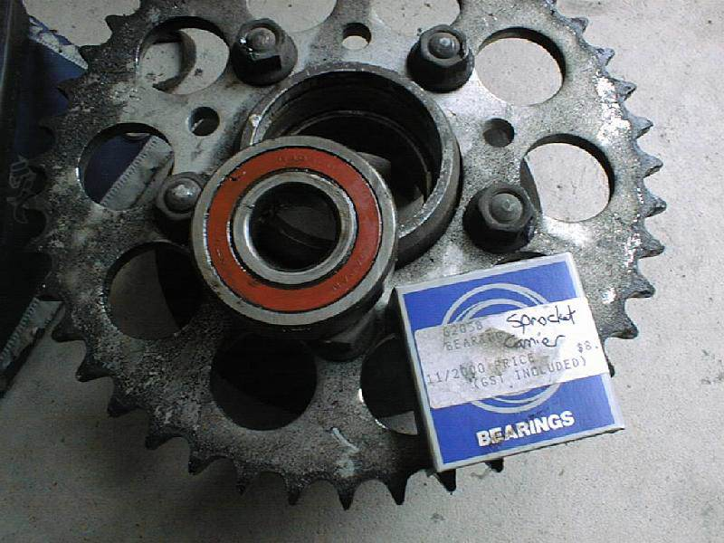
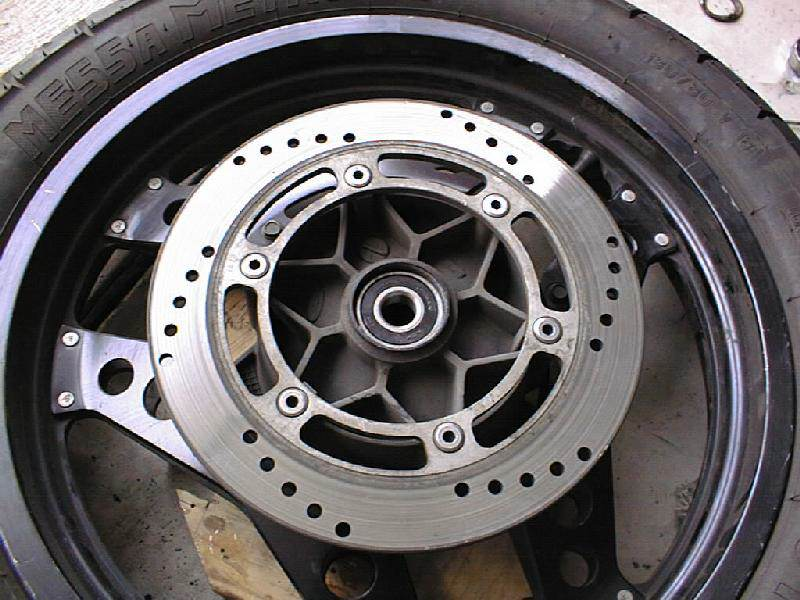
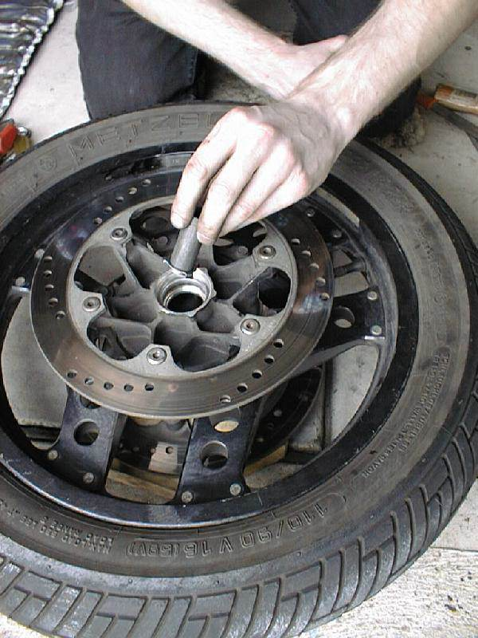

I really have no idea how often you should do this. I’ve ridden over 100,000km on one set of wheel bearings. The only reason I knew they were worn out was at a track day – the scrutineering was a lot stricter than normal and the inspector pointed them out to me. So I guess a good change interval would be about 75,000km or so, or in my case, 100,000km.
It’s a fairly dirty job (or at least it was in my case), as you’ll be able to see from the pictures. I made it a habit to put a good sized amount of grease onto the axle every time I removed it, and it looks like some of that grease ended up in the bearings. (Through luck, more than anything.)
The RC17 has three rear wheel bearings and two front wheel bearings. In a strange fit of perversity, all three rear bearings are different. These bearings are all standard types and sizes, so you’ll be able to walk into any good bearing shop and buy them over the counter. The same goes for the dust seals.
So here’s the bearing numbers you need:
Bearing Number Location
6302B Front Wheel (*2)
6204B Rear Wheel (LHS)
6304B Rear Wheel (RHS)
6305B Sprocket Carrier (RC17-E)
6205B Sprocket Carrier (RC17-G)
Be careful here – when I ordered my bearings, the guys at the shop ordered the
wrong one for my sprocket carrier. I didn’t find this out until I’d taken the bike to pieces and removed the old sprocket carrier bearing. I was not amused.
Step 1: Removing the rear wheel
We need to remove the rear wheel to gain access to the suspension linkages.
Put the bike on it’s centre stand – we can use an axle stand as we won’t be removing the swingarm.
Loosen the chain adjuster bolts on each end of the swingarm, and push the wheel as far forward as it will go. Carefully unhook the chain from the rear sprocket, and suspend it from a suitable hook. (I used the rear footpeg hanger.)
Undo the axle nut, and slide the axle bolt out of the swingarm and wheel bearings. You’ll need to support the wheel as you do this. Also be careful of the axle spacers (they tend to fall out when you least expect it), and the rear brake disk will have to be removed from the caliper. Be sure to suspend the caliper from something, to prevent damage to the brake line.
Step 2: Replacing the sprocket carrier bearing
This is probably the most difficult of them to remove, as there is a dirty great big spring clip hiding under the dust seal. There is also an ‘O’ ring hiding in there as well. Once you get the spring clip out, it’s a simple matter to use a hammer and drift to push the bearing out from the other side. If your carrier is anything like mine was, you’ll have to remove a huge amount of old grease before you can even see the bearing.
Carefully tap out the bearing with the drift and hammer, trying to avoid damaging any of the sprocket carrier – it’s only soft alloy (aluminium?), so take care.
Once the bearing is out, clean everything with rags and maybe some degreaser if you think it’s needed.
Now it’s time to gently tap the new bearing into place. I pushed the bearing into place with my fingers, then used the hammer to gently tap it down until I had to use the drift. (The ‘O’ ring goes in here somewhere as well, but I’ve forgotten where!)
Once it’s all in place, refit the spring clip. Then put a smear of moly-disulphide grease around the edge of the dust seal and tap it into place with the hammer. When it comes time to put the wheel back togther, put a smear of grease in the hole where the axle spacer goes, just to help keep the dust and dirt out.
Step 3: Replacing the rear wheel bearings
Make certain that you have some sort of a soft surface that you can rest the wheel on to prevent damage to either the brake disk or the wheel rim itself. I used some blocks of pine that I had lying around the garage.
As with the sprocket carrier bearing, remove the dust seals.
Now comes the fun part – removing the old bearings. There is some sort of spacer / axle tube in the centre of the hub, and I found that it got in the way when I was trying to push the bearing out.
By pushing the tube to one side, you can get enough space to start pushing the bearing out. Once the bearing is out, the spacer will also fall out.
Turn the wheel over and remove the other bearing. Just make certain that you remember which bearing goes in which side!
Again, clean up the holes where the bearings go, and proceed to tap the first one into place. Once it’s in, put the spacer inside the hub, and tap the second bearing into place. Be careful not to tap the bearings too far – I found that the spacer tube was slightly too long, and ‘locked’ the bearings so they wouldn’t turn. A swift rap of the hammer to move one of the bearings the required fraction of a millimeter solved that little problem.
Once again, put a smear of moly-disulphide grease around the edge of the dust seals and tap them home.
Put the sprocket carrier back into the hub, and put the wheel back into the bike. The wheel bearings won’t make it any easier to put it all back together again, but the dust seals will hold onto the axle spacers a bit better. You might as well take this opportunity to check your chain tension and give it some lube to make it last a bit longer and stop it rusting.
Step 4: Replacing the front wheel bearings
This is where it gets interesting….
You’ll need someway to support the bike whilst the front wheel is out. I found that two house bricks and a couple of blocks of wood under the frame rails (at the front of the engine – where the engine mounts are) worked perfectly. You may also need someone to help raise the front of the bike enough to get the axle out from between the two bolts that stick out the bottom of each fork leg.
But I’m getting ahead of myself a bit. Before you can take the wheel out, you need to remove the brake calipers from their mounts and suspend them with rope or something to prevent damage to the brake lines. You’ll need to remove the speedo drive cable, and the caps at the bottom of the fork that hold the axle in place.
Once you’ve done all that, you can pull the wheel out and start to take it to pieces.
The axle is actually a very long bolt – use two spanners to undo it, and remove it. Take out the speedo drive unit, followed by the dust seals and the bit of steel that actually drives the speedo drive unit. When you take it all to pieces you’ll see what I’m talking about.
Once again, there is a spacer / axle tube hiding inside the hub. Yep, this one will also ‘lock’ the bearings if you push them a bit too far in. As with the rear disk, be careful to avoid damage to the brake disks. The service manual actually recommends removing the disks, but that’s a bit too much extra work.
(You can guess what I’m going to say here, can’t you?) Once the bearings are out, clean up their homes and proceed to tap the new ones into place. At least with the front wheel you don’t need to worry about putting the bearing in the correct side.
And yet again, a smear of moly-disulphide grease goes on the edges of the dust seals when you put them in.
When it came time to tighten the axle bolt up, we found that anything more than a moderate amount of torque resulted in an axle that wouldn’t spin! The service manual recommends a fair amount of force to hold it all together, but I opted to tighten it up enough to hold it all together and still be able to spin freely. After all, it’s not going to loosen itself off, is it? (Well, it won’t loosen off if you tighten the axle mounting bolts properly.)
All you have to do is put the speedo cable back in, and the brake calipers back on, and you’re just about finished. Tighten up the axle holder nuts evenly, so that there is an even sized gap at both front and rear of the cap, then torque them up good and tight.
Step 5: What now?
Simple!! Now that it’s all back together, make sure that everything is where it’s supposed to be, and that all the bolts are done up to their correct torque setings. Don’t forget to pump the brakes back out – there’s nothing like grabbing the brakes and getting a big handful of nothing!
OK, everything back in it’s proper place? Take it for a spin!
The Pictures
The pictures didn’t come out as well I expected. It looks like work’s digital camera isn’t quite able to get the definition and detail that I was after. Oh well…

The rear wheel is out, the pieces are aligned, and Stuart can’t stay away from the camera…

The new bearing for that side, all ready to be installed.

The old sprocket carrier bearing and the new one. And they are different sizes! The shop gave me the wrong one.

A shiny new bearing in it’s proper place.

Installing the spacer into the front hub.